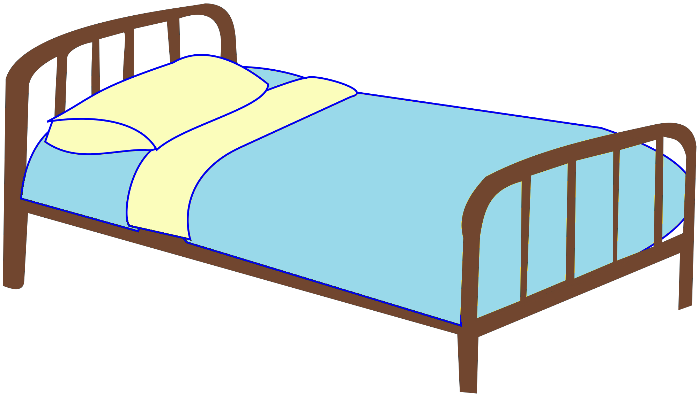

Night 101

It's been a long day. Time for some well deserved rest. Here's how you go about it.
- Put on your pyjamas. Due to the difficulty in actually locating these, this shall be left up to you to figure out.
- Proceed by plugging in your phone to a charger and setting your alarm. 15 minutes prior to your classes will suffice.
- At this point, you're almost ready. Turn off any lights and close the door.
- Head to the bed and make an epic fall on the bed and close your eyes.
- Wait until you fall asleep. If this is taking too long, feel free to dream about impossible feats in which you are the main character.
That is how I fall asleep.
Click here to go back to the home page.